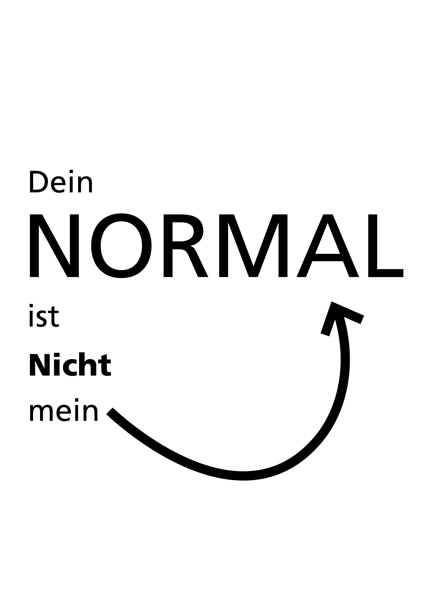
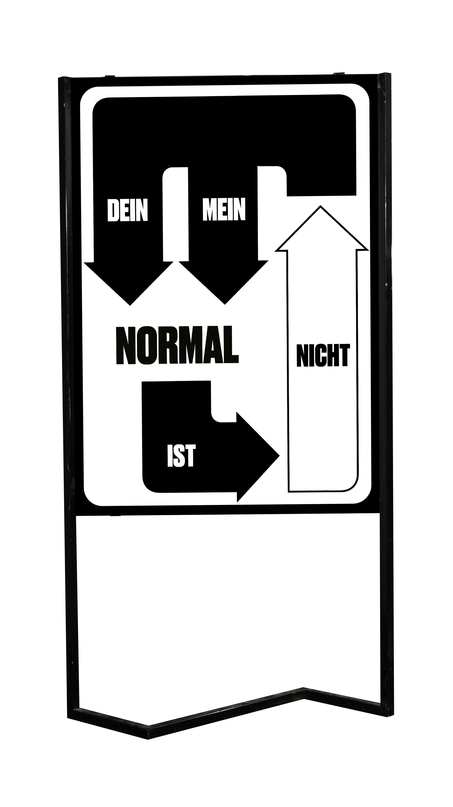

What does “normal” actually mean? This poster challenges societal notions of normality and invites viewers to reflect on cultural differences and individual perspectives. Black-and-white contrasts, typographic tension, and animated arrows draw the eye and illustrate the complexity of perception. The sentence “Dein Normal ist nicht mein Normal” forms the conceptual core of the work. The result is a poster that is visually minimalist but profound in its exploration of the relativity of everyday life.


As an extension of the poster, the accompanying newspaper explores the theme of normality and individuality in greater depth. Large arrows guide the reader through the layout. On a double-page spread, numerous small arrows create the visual chaos of everyday life. Each of these elements represents a different definition of “normal” and illustrates the diversity of human perception. At the end, the message is condensed: “Jeder sieht die Welt durch seine eigenen Augen,” a clear statement about identity and perspective.